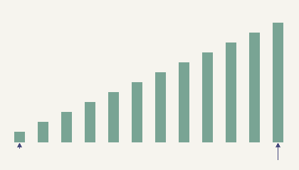
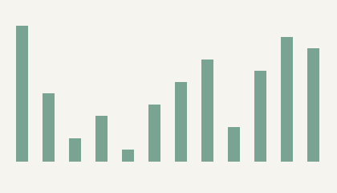

Vier Wochen · sieben Lektionen
Probleme mit Algorithmen lösen
Mit dem Projekt üben Sie, ein Problem mit einem Algorithmus zu lösen. Dazu untersuchen Sie ein Such- oder Sortierverfahren (oder die Umwandlung zwischen Zahlensystemen), beschreiben seine Schritte, setzen es mit Listen und Funktionen in Python um, testen Ihre Lösung und reflektieren Ihre Arbeitsweise. Sie zählen Vergleiche und untersuchen, ob sich unnötige Vergleiche einsparen lassen.
Bei Zahlensystemen zählen Sie Umwandlungsschritte statt Wertevergleiche. Listen und Funktionen sind ausdrückliche Lernziele: Sie arbeiten mit Positionen, verwenden Schleifen, Bedingungen, Parameter und Rückgabewerte und erklären den eigenen Code.
Sie arbeiten grundsätzlich zu zweit. Öffnen Sie nur das Ihnen zugeteilte Projekt.
Animation ansehen

Animation ansehen

Animation ansehen
Animation ansehen
Animation ansehen
Animation ansehen
Animation ansehen
Projekte 6 und 7 sind anspruchsvolle Wahlangebote. Die stärkste Gruppe jeder Halbklasse kann eines davon wählen; keines muss vergeben werden. Projekt 7 beginnt ausnahmsweise mit vorgegebenem iterativem Code, Projekt 6 mit Beschreibung und Animation.
Sechs Schritte durch das Projekt
Nach erfolgreichem Abschluss der Meilensteine erhalten Sie von der Lehrperson einen Code. Damit erhalten Sie Zugriff auf das Zusatzmaterial (nach Meilenstein 1) und das Arbeitsnotebook (nach Meilenstein 2). Projekt 7 ist etwas komplizierter in der Umsetzung. Dafür erhalten Sie den Ausgangscode bereits vor Meilenstein 1.
-
Verstehen
Beschreiben Sie das Problem: Was ist gegeben (Eingabe) und was gesucht (gewünschtes Ergebnis)? Beobachten und spielen Sie Beispiele durch. Projekt 7 beginnt ausnahmsweise mit vorgegebenem Python-Code. Nutzen Sie die Animation, um dessen Ablauf nachzuvollziehen.
Meilenstein 1: Jede Person zeigt der Lehrperson ihr Verständnis des Algorithmus an einer unbekannten Konstellation ohne Hilfsmittel (Computer, KI oder Hilfekarten). -
Beschreiben
Erstellen Sie Pseudocode und Flussdiagramm. Planen Sie zwei bis drei Testfälle mit Eingabe, Erwartung und Begründung.
Meilenstein 2: Jede Person erklärt der Lehrperson die Darstellungen, Entscheidungen, Wiederholungen und die Testplanung. -
Umsetzen
Verwenden Sie Listen, Positionen, Schleifen und Bedingungen in einer Funktion mit passenden Parametern und Rückgabewerten. Bei Projekt 7 bearbeiten Sie die vorgegebene Implementation. Bauen Sie die bereitgestellte Visualisierung ein; der Titel nennt Algorithmus, Runde und bisherigen Zähler.
-
Überprüfen
Schreiben Sie eigene Testfunktionen mit if/else und vergleichen Sie Erwartung und Ergebnis. Korrigieren Sie Fehler und testen Sie erneut. Die bereitgestellten Tests sind eine zusätzliche Kontrolle.
-
Reflektieren
Kopieren Sie Ihre funktionierende Funktion in eine neue Notebook-Codezelle. Lassen Sie das Original unverändert und ergänzen Sie den Zähler nur in der Kopie. Erklären Sie die Messwerte anhand des Ablaufs. Alle geben eine persönliche Reflexion ab und erklären ihren eigenen Code.
-
Optimieren (wenn möglich)
Erkennen Sie eine unnötige Operation, probieren Sie eine kleine Verbesserung aus oder formulieren Sie einen begründeten Vorschlag. Auch eine begründete Entscheidung gegen eine Änderung ist ein gutes Ergebnis. Eine erfolgreiche Optimierung ist keine Voraussetzung.
Ihr Arbeitsdossier
Ihr Zeitplan
Für Dossier und Notebook haben Sie sieben Lektionen über vier Wochen: eine Lektion in Woche 1 und je zwei Lektionen in den Wochen 2–4. Arbeiten Sie auch zwischen den Lektionen selbstständig weiter. Richtwert: Meilenstein 1 in Woche 1 und Meilenstein 2 in Woche 2 erreichen, damit Sie danach mit dem Programmieren beginnen können. Vereinbaren Sie die Vorführungen rechtzeitig mit der Lehrperson.
| Zeitraum | Schwerpunkt |
|---|---|
| Woche 1 · 1 Lektion | Algorithmus entdecken und durchspielen; Richtwert: Meilenstein 1 erreichen. |
| Woche 2 · 2 Lektionen | Pseudocode und Flussdiagramm erstellen, zwei bis drei Testfälle definieren und damit den Algorithmus überprüfen; Richtwert: Meilenstein 2 erreichen. Danach mit dem Programmieren beginnen. |
| Wochen 3–4 · je 2 Lektionen | Funktion schreiben und testen, vorgegebene Visualisierung einbauen, Aufwand messen, Generalisierung und Optimierung untersuchen. Dossier und Notebook möglichst weit fertigstellen; in Woche 4 erste Ideen für Handout und Präsentation entwickeln. |
| Vor den Weihnachtsferien | Dossier nach Möglichkeit bereits abgeben; die persönliche Reflexion darf nachgereicht werden. Bei zusätzlicher Abgabe des fertigen, ausführbaren Notebooks gibt es einen Bonus von +0.25 Notenpunkten (maximal Note 6.00). |
| Weihnachtsferien (2 Wochen) | Noch fehlende Arbeiten fertigstellen und einreichen. Dossier einschliesslich Reflexion und Notebook müssen spätestens am 30. Dezember um 12:00 Uhr bei der Lehrperson eingegangen sein. |
| Zusätzliche Woche | Handout und Präsentation vorbereiten; den eigenen Code erklären können. |
Konkrete Schritte zählen
Zählen Sie Wertvergleiche: beim Sortieren zwischen Listenwerten, bei der Suche zwischen Suchwert und Listenelement. Schleifenbedingungen und Indexgrenzen zählen nicht. Bei Zahlensystemen zählen Sie bearbeitete Stellen in der Umwandlungsschleife, nicht das Vorbereiten der Stellenwerte. Keine O-Notation oder mathematische Herleitung.
Im Notebook: Getesteten Code in eine neue Zelle kopieren, nur die Kopie um den Zähler ergänzen, Original und vereinbarte Rückgabe behalten. Geben Sie der Messkopie einen eigenen Namen. Eine veränderte Rückgabe der Kopie dokumentieren Sie deutlich. Keine Neuimplementation von Grund auf.
Sortieren: 10, 100, 1000 und 10000 Elemente in vier Anordnungen. Suche: dieselben Grössen, immer
aufsteigend, Treffer am Anfang/in der Mitte/am Ende und fehlender Wert. Zahlensysteme: unterschiedlich
lange Darstellungen und 0, beide Richtungen. Ausgangslisten einmal erstellen und je Variante mit
ausgangsliste[:] kopieren. Messen Sie ohne Visualisierung.
Bewertung und Abgabe
Beide Meilensteine sind individuell: Versuch 1 sehr gut erreicht, 2 gut erreicht, 3 genügend erreicht, 4 ungenügend erreicht; bei Versuch 4 noch Hilfe nötig: gar nicht erreicht. Die Ergebnisse werden übernommen, nicht erneut geprüft.
Geben Sie Ihr Arbeitsdossier nach Möglichkeit bereits vor den Weihnachtsferien ab. Die persönliche Reflexion dürfen Sie nachreichen. Wenn Sie zusätzlich Ihr fertiges, ausführbares Arbeitsnotebook vor den Weihnachtsferien abgeben, erhalten Sie einen Bonus von +0.25 Notenpunkten (maximal Note 6.00). Eine vollständige Abgabe vor den Ferien ist erwünscht, aber nicht obligatorisch.
Arbeitsdossier einschliesslich persönlicher Reflexion und Arbeitsnotebook müssen spätestens am 30. Dezember um 12:00 Uhr bei der Lehrperson eingegangen sein. Dies ist eine Eingangsfrist, keine Versandfrist. Fehlende Unterlagen stellen Sie während der Weihnachtsferien fertig und reichen sie ein.
Nach den Weihnachtsferien steht eine zusätzliche Woche zur Vorbereitung von Handout und Präsentation zur Verfügung. Sie müssen Ihren eigenen Code erklären können.
Gezielte Lernfragen
KI darf mit Rückfragen, Erklärungen einzelner Konzepte und Hinweisen auf Denkfehler helfen. Fordern Sie keine fertige Lösung an. Beginnen Sie mit: «Gib mir keine fertige Lösung, sondern hilf mir, meine Frage zu verstehen.» Beide Meilensteine finden ohne KI statt.
Python-Werkzeuge und Spielregeln
Sie entwickeln den Algorithmus selbst. Im Zusatzmaterial erhalten Sie ausklappbare Erklärungen zu den erlaubten Bausteinen.
Erlaubt sind
- Zugriff auf Listenelemente über ihre Position, Zuweisung an eine Position und Teilbereiche wie
liste[start:ende]. len,for- undwhile-Schleifen.- Die bereitgestellten Funktionen aus
zusatz.pyzum Erstellen von Testlisten und zur Visualisierung. - Tauschen mit einer Hilfsvariablen sowie
append,insertundpop.
Nicht erlaubt sind
Erlaubte Referenzen nur in Testfunktionen:
- Sortieren:
sort()auf einer separaten Kopie der Eingabe. - Suchen:
index()als Referenz für einen vorhandenen Wert. Es liefert das erste Vorkommen und wirft bei fehlendem Wert einenValueError; den Fall «fehlt» testen Sie mit der Erwartung-1. - Zahlensysteme:
bin()undhex()zum Überprüfen. Sie liefern Text mit dem Präfix0bbzw.0x, keine Ziffernliste.hex()bezieht sich auf Basis 16; der Pflichtauftrag bleibt bei Basis 2, später 3–9.
Kleine erwartete Ergebnisse bestimmen Sie zuerst selbst. Diese Referenzfunktionen dürfen den selbst
entwickelten Algorithmus nicht ersetzen. In der Algorithmusfunktion bleiben sort(),
sorted(), index(), bin() und hex() verboten.
liste.sort()undsorted(liste).liste.index(wert),bin(zahl)undhex(zahl)in der Algorithmusfunktion.- Mitgliedschaftsprüfungen wie
wert in listeundwert not in liste. - Tupelzuweisung zum Tauschen, etwa
a, b = b, a.
Das in in einer for-Schleife ist erlaubt.